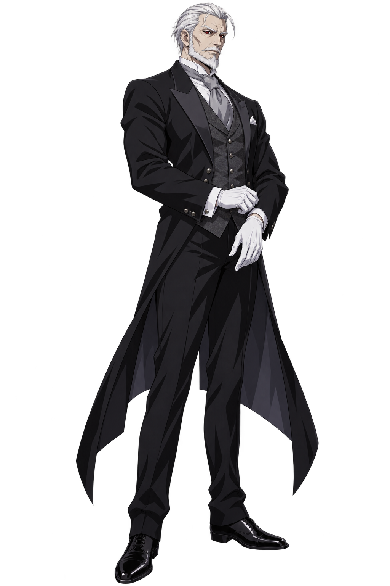
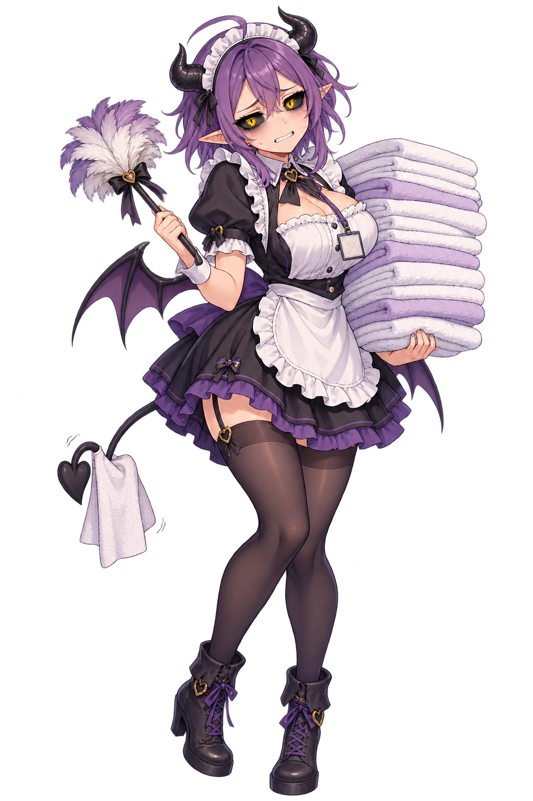
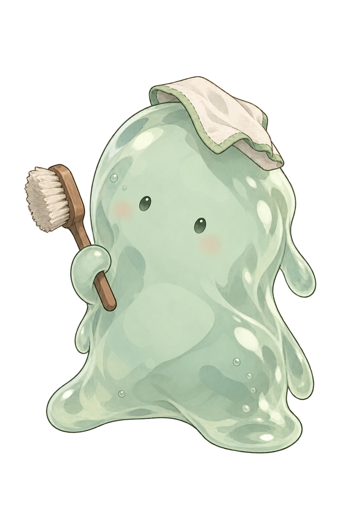
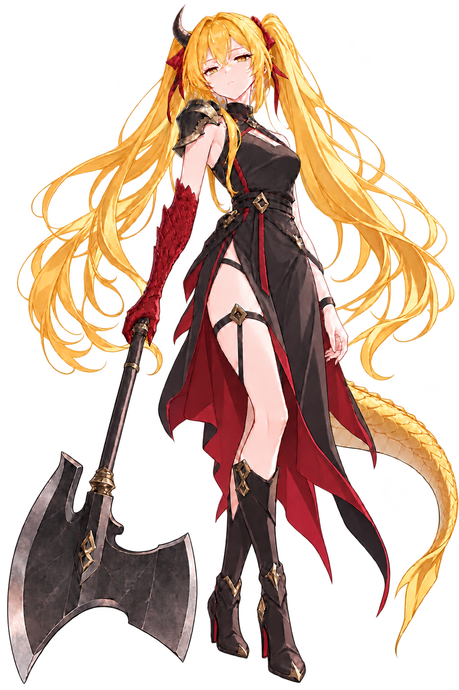
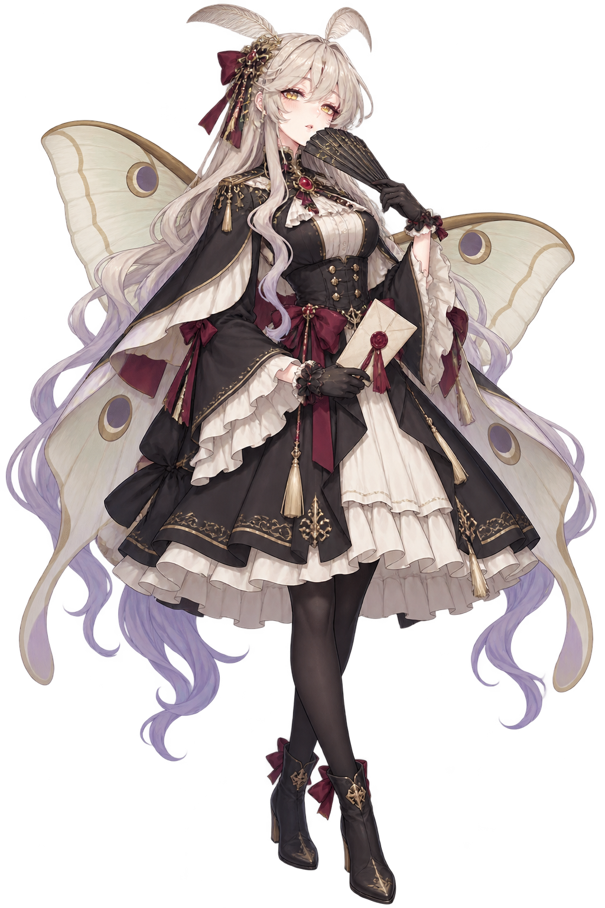
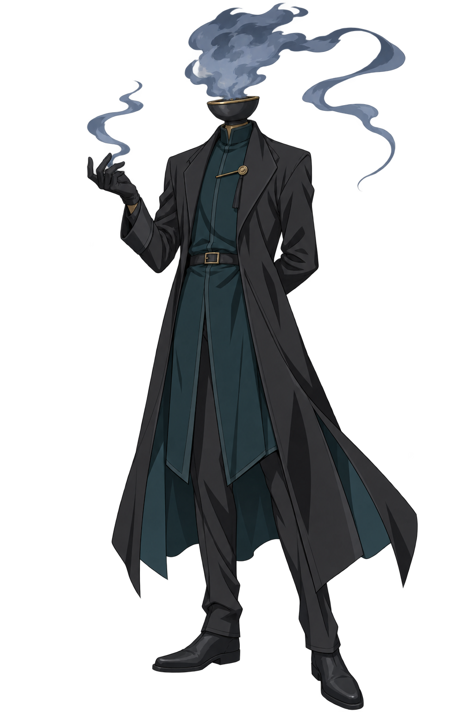
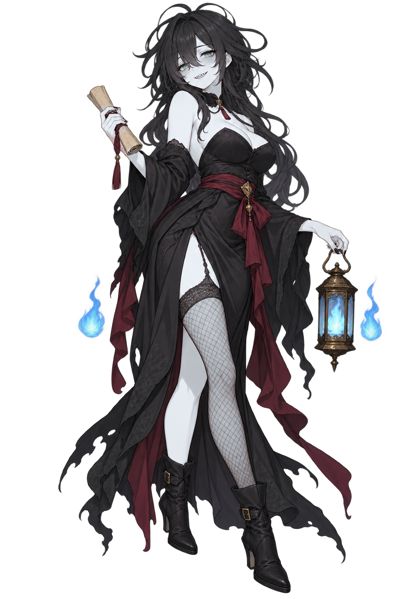

대화에 맞춰 등장하는 스탠딩 일러스트 7종.

뱀파이어 집사 · 말썽이 생기면 물잔과 장부부터 챙긴다.

서큐버스 메이드 · 정기 수급 실적 미달로 메이드부에 이동했다.

청소부 슬라임 · 오늘도 누군가 흘린 것을 닦는다.

사천왕 · 성벽과 병사들을 지키는 장군.

사천왕 · 날개의 인분으로 봉인과 통행 흔적을 읽는다.

사천왕 · 결계 연료와 성의 보급을 관리한다.

사천왕 · 죽은 이의 잔향과 실종자의 흔적을 읽는다.